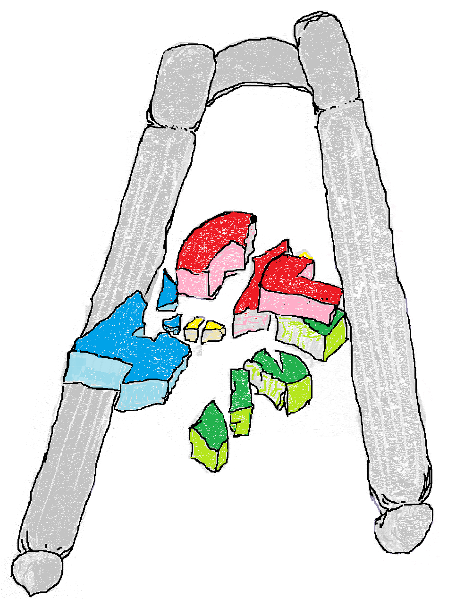

Scope of Projects and Services
As a retired person who needs to stay active to survive, my interests are constantly evolving as I develop new skills that I want to hone. As time has gone on, my emphasis has been towards more artistic outlets and graphic arts increasingly has filled my time. However, I have always been loath to let skills die from disuse. As a result the activities I will undertake reflect this, as is set out below.
see my usual terms of project acceptance and custom works
Also as I have accumulated "Objets d'Art" from my activities I have realized that they are saleable items of possible interest to my followers. So I have expanded to include Shopping Options where those who may be interested can buy these fruits of my labours at reasonable prices. I still Blog but more on Aircraft and aerospace architecture than numerical simulations of airfoils etc.This has moved most of my writing to a "Patreon" site which also includes a Model Shop. This is supplemented with a "Buy me a Coffee" page where those who wish to support me with less of a committment to subscribe can do so.
So, what are the things I am doing that you may be interested it?
- General Modeling
- Graphical Modeling, and Animation
- Physical Modeling (hardware)
- Development of custom analytics tools and reporting for STEM/AVSIM data
Blender, Krita, X-plane and miscellaneous simulation (game engine application)projects as well as 3D printable versions of objects developed for X-Plane simulations
Printable files are posted for purchase by public or downloadable for free for full support subscribers on our Patreon page. X-Plane simulation freeware are available for download by X-Plane.org members. X-Plane.org serves the X-Plane Sim community and is free to join.
Youtube videos on technical (STEM/AVSIM) topics and demonstration videos of our developed X-Plane models in action.
sculpting, casting and carving in various media
- analysis and novel ideas for presentation of STEM data
- Mathematical Simulation and Modelling
- Deterministic Models
- Stochastic Models
- Process Simulation and Analysis
My movement to increasingly complex graphics and visual environments drives the evolution of analytical projects. Modern Computer graphics now permit much more illustrative and demostrational visual simulations to give a clearer analysis of data. Some areas to be explored in a visual learning context are outlined below which will yield to many types of Mathematical modeling. These are some exciting applications which our growing expertise in computer graphics tools can build projects from.
- Mathematical Programming, Graph and Network Models

- Times series models and forecasting
- Regression Models
- GLM and Experimental Design
- Excel and VBA Solutions
- R-Language Analytics and Programming
- SAS Models, Analytics and Programming
I still enjoy process simulation and modeling, probably in more graphical contexts
- Rockwell Arena, Monte Carlo Simulation
- Graphical Models and Assets Merchandise
- 3D Printable Object Shopping and Model Sales
- Graphical Assets Merchandise for Game Environments
- Simulation and Game Product Sales see my usual terms of project acceptance and custom works
- individual 3D printable models of aircraft and buildings have been developed from the simulated versions running as X-Plane and Unreal Engine projects. These printable, paintable display pieces as for sale in Patreon and "Buy me a Coffee" Shops. Visit these, see our products for purchase and support our existing freeware work by joining the Pages there..
- Complete simulation items for specific game engine environments. X-Plane Aircraft simulations are available as freeware and payware for download.
SketchFab shopping is a source for our games compatible assets and the Patreon and "Buy me a Coffee" Shopping items include blender objects adaptible for as game assets in Godot or Unreal Engines among others.
Visit any of our links to Shopping for Printable Models, 3D Art Objects and 3D Assets
Blender, Krita, X-plane and miscellaneous simulation (game engine application)projects as well as 3D printable versions of objects developed for X-Plane simulations
Printable files are posted for purchase by public or downloadable for free for full support subscribers on our Patreon page. X-Plane simulation freeware are available for download by X-Plane.org members. X-Plane.org serves the X-Plane Sim community and is free to join.
Youtube videos on technical (STEM/AVSIM) topics and demonstration videos of our developed X-Plane models in action.
- Writing
- Technical Writing
- Special Job / Miscellaneous Custom Writing
- Web Content
Technical and Report Writing, Documentation (User and Organizational/Procedural) Writing
- "We will writing on topics or projects of general interest" A preference for STEM topics is clearly preferred
- Page and Blog copy writing
- Blog toppics are represented here on The Blog as well as a more extensive collection of writings on aerospace topics on "Patreon".
- Web and Desktop Clinical Data Tools Development
We do less Web development these days but small web creation projects are something we can take on. Example of things we have done include:
- Web Dashboards (Database Analytics and Business Indicator Dashboards)
- Java, HTML/JavaScript programming
- Python and R Application programming (Shiny Applications?)